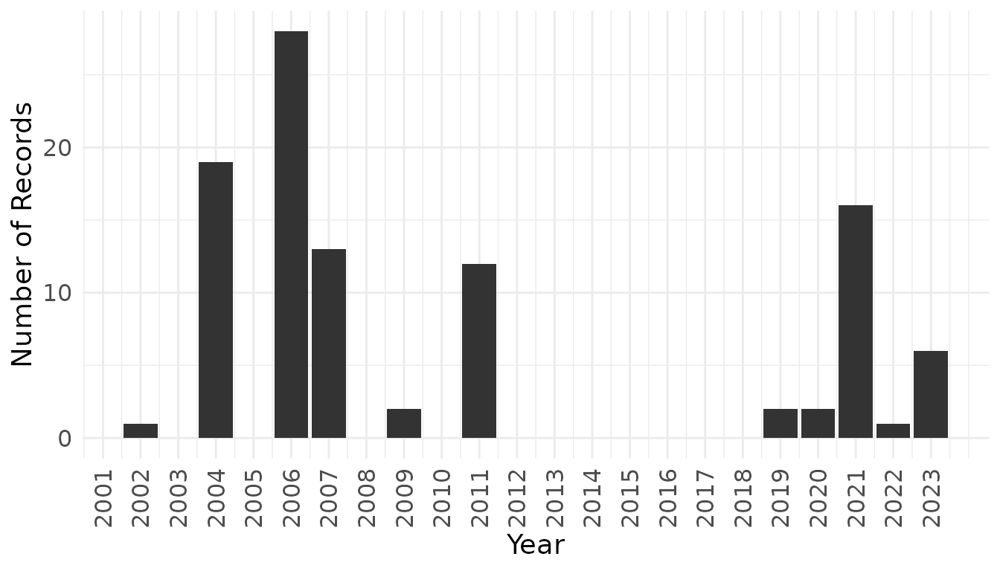

Retrieving Species Occurrence Data and IUCN Red List Status for Protected Areas
Source:vignettes/GBIF-and-IUCN-Red-List.Rmd
GBIF-and-IUCN-Red-List.RmdIntroduction
Understanding the conservation status of species within protected areas is essential for effective biodiversity management and monitoring. This tutorial demonstrates how to obtain species occurrence records from the Global Biodiversity Information Facility (GBIF) for a specific geographic area and retrieve their corresponding IUCN Red List categories. We use Wari-Maro and Monts Kouffé National Parks in Benin as a case study, focusing on chordate species recorded since 2000.
The workflow combines spatial filtering of occurrence data with automated queries to the IUCN Red List API, providing a reproducible approach for assessing the conservation status of species assemblages in any protected area.
Setup and Dependencies
We begin by loading the required packages. The rgbif
package provides access to GBIF data, redlist interfaces
with the IUCN Red List API, and sf handles spatial
operations. The dplyr and ggplot2 packages
support data manipulation and visualization respectively.
# Define required packages
packages <- c("rgbif", "redlist", "sf", "dplyr", "ggplot2")
# Install missing packages and load all
for (pkg in packages) {
if (!requireNamespace(pkg, quietly = TRUE)) {
install.packages(pkg, repos = "https://packagemanager.posit.co/cran/latest", dependencies = TRUE)
}
library(pkg, character.only = TRUE)
}Downloading Occurrence Data from GBIF
Setting Download Predicates
GBIF allows users to filter occurrence data using predicates, which define specific criteria for the records to retrieve. For this analysis, we establish three predicates to ensure data quality and relevance. We limit records to those from 2000 onwards, restrict the basis of record to human and machine observations to exclude fossil and preserved specimens, and require valid geographic coordinates for spatial analysis.
# Temporal filter: records from 2000 onwards
year_pred <- pred_gte("year", 2000)
# Record type filter: observational data only
basis_of_record <- pred_in("basisOfRecord",
c("MACHINE_OBSERVATION", "HUMAN_OBSERVATION"))
# Spatial quality filter: only georeferenced records
has_coordinate <- pred("hasCoordinate", TRUE)Preparing the Spatial Boundary
To restrict occurrence data to our study area, we need to prepare the
park boundary in a format compatible with GBIF’s download API. This
involves several spatial processing steps. First, we import the
shapefile and verify its geometric validity. Since the boundary consists
of multiple polygons representing different park sections, we merge them
into a single polygon using st_union(). To reduce
complexity and file size, we simplify the boundary by retaining vertices
at 200-meter intervals.
# Import park boundary shapefile
wama_moko <- read_sf("wama_moko/wari-maro_monts kouffé.shp")
# Verify polygon validity
st_is_valid(wama_moko)
# Merge into single polygon and simplify
wama_moko_single <- st_union(wama_moko) %>%
st_simplify(dTolerance = 200) %>%
st_reverse() # flips the polygon vertices to follow counterclockwiseGBIF requires polygon coordinates in geographic (longitude/latitude) format rather than projected coordinate systems. We check the current coordinate reference system and transform it to WGS 84 (EPSG:4326), the standard geographic coordinate system.
# Check current CRS
st_crs(wama_moko_single)$input
# Transform to geographic coordinates
wama_moko_single <- st_transform(wama_moko_single, crs = 4326)Finally, we convert the polygon to Well-Known Text (WKT) format, which GBIF uses to define spatial predicates.
# Convert to WKT format for GBIF
wama_moko_wkt <- st_as_text(wama_moko_single)
# Create spatial predicate
wama_moko_pred <- pred_within(wama_moko_wkt)Configuring GBIF Authentication
Downloading data from GBIF requires a free user account. You need to
configure your credentials once by adding them to your
.Rprofile file. This approach keeps your authentication
information secure and persistent across R sessions.
# Open .Rprofile file
rl_open_file()Add these lines to .Rprofile (replace with your actual credentials):
gbif_user = "your_username"
gbif_pwd = "your_password"
gbif_email = "your_email@example.com"Save the file and restart R/RStudio
Submitting and Retrieving the Download
With all predicates defined and authentication configured, we submit the download request to GBIF. The download process is asynchronous, meaning GBIF processes the request on their servers while you can continue working. The function returns a download key that you use to check status and retrieve results.
# Submit download request
wama_moko_occ <- occ_download(
year_pred,
basis_of_record,
has_coordinate,
wama_moko_pred,
format = "SIMPLE_CSV"
)Monitor the download status using the download key provided in the output. Once complete, retrieve and import the data into R.
# Replace with your actual download key from, wama_moko_occ
download_key <- "0007614-251120083545085"
# Wait for download to complete
occ_download_wait(download_key)
# Retrieve and import data
wama_moko_df <- occ_download_get(download_key) %>%
occ_download_import()Filtering and Processing Occurrence Records
For this analysis, we focus on chordate species, which include vertebrates such as mammals, birds, reptiles, amphibians, and fish. We filter the downloaded records to this taxonomic group and remove duplicate records for the same species at identical coordinates, which often represent repeated sampling events rather than distinct occurrences.
species_of_interest <- wama_moko_df %>%
filter(phylum == "Chordata", species != "") %>%
distinct(species, decimalLongitude, decimalLatitude, .keep_all = TRUE) %>%
select(species, decimalLongitude, decimalLatitude, year)
# View processed data
species_of_interestThe resulting dataset contains 102 occurrence records representing 62 unique species. We can visualize the temporal distribution of sampling effort to identify patterns in data collection intensity.
species_of_interest %>%
count(year) %>%
ggplot(aes(x = year, y = n)) +
geom_col(fill = "gray20") +
labs(x = "Year", y = "Number of Records") +
scale_x_continuous(breaks = seq(2000, 2023, 1)) +
theme_minimal() +
theme(
axis.text.x = element_text(angle = 90, vjust = 0.5),
axis.text = element_text(size = 12),
axis.title = element_text(size = 14)
)
Retrieving IUCN Red List Categories
API Configuration
The redlist package requires an IUCN Red List API token
for authentication. Detailed instructions for obtaining and configuring
your API token are available in the package
documentation.
Querying Species Assessments
We systematically query the IUCN Red List API for each unique species in our occurrence dataset. The process includes rate limiting to avoid overwhelming the API and error handling to manage species that are not found in the database. For species with multiple assessments, we retain only the most recent evaluation to reflect current conservation status.
# Initialize storage for unfound species
not_found_sp <- list()
avail_sp <- unique(species_of_interest$species)
# Query IUCN status for each species
genus_species <- lapply(avail_sp, function(x) {
# Display progress
progress <- round(which(avail_sp == x) * 100 / length(avail_sp), 2)
message(paste0(progress, "%"))
# Rate limiting to respect API constraints
Sys.sleep(0.5)
# Parse genus and species names
splited <- strsplit(x, "\\s")[[1]]
# Query Red List API with error handling
search_result <- tryCatch({
rl_scientific_name(
genus_name = trimws(splited[1]),
species_name = trimws(splited[2])
) %>%
mutate(year_published = as.numeric(year_published)) %>%
slice_max(year_published, n = 1, with_ties = FALSE)
}, error = function(e) {
not_found_sp[[x]] <<- x
return(NULL)
})
search_result
})
# Compile species with IUCN assessments
species_with_iucn <- bind_rows(genus_species)Analyzing Conservation Status
Some species may not be found in the IUCN database due to taxonomic revisions, synonymy issues, or lack of formal assessment. Species without IUCN status (n =8): Gerbilliscus kempii, Manis tricuspis, Corvinella corvina, Canis adustus, Phyllastrephus scandens, Psittacula krameri, Manis gigantea, Chloropicus pyrrhogaster.
The conservation status distribution provides insight into the vulnerability of the chordate assemblage within Wari-Maro and Monts Kouffé National Parks. We summarize the frequency of each Red List category to identify the proportion of threatened species requiring conservation attention.
| red_list_category_code | n |
|---|---|
| LC | 45 |
| NT | 5 |
| EN | 2 |
| DD | 1 |
| VU | 1 |
Conclusion
The alysis of chordate species in Wari-Maro and Monts Kouffé National Park revealed 54 species with available IUCN assessments. The majority (83%) are classified as Least Concern, indicating relatively stable populations. However, the presence of threatened species warrants attention: two species are Endangered (Loxodonta africana, and Terathopius ecaudatus), one is Vulnerable (Panthera leo), and five are Near Threatened, together representing 15% of the assessed assemblage. One species remains Data Deficient, highlighting ongoing knowledge gaps. This distribution suggests that while the parks harbor predominantly common species, they also provide critical habitat for species facing elevated extinction risk. It is important to note that since our data spans from 2000 onwards, some recorded species may no longer be present in the parks; however, their historical occurrence indicates that suitable habitat conditions existed and potentially remain, suggesting these areas could support recolonization or continued persistence if populations remain viable.